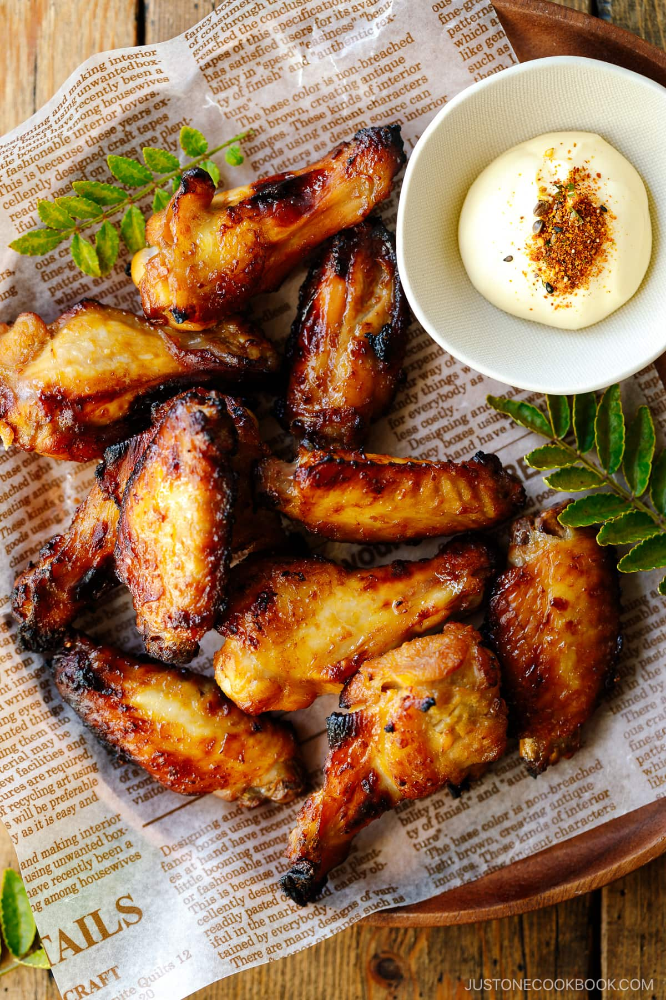

Garlic Miso Chicken Wings Recipe

Description
Marinated in a delicious savory sauce, baked Garlic Miso Chicken Wings are crispy on the outside and juicy and succulent inside. They‘re a perfect appetizer for game days and parties or an easy main dish for your weeknight dinner. Dip them in creamy Japanese Kewpie mayo spiked with shichimi togarashi—so tasty that they‘ll be devoured in an instant!
Ingredients
- Chicken wings – I used 5 flats and 5 drumettes; you can use any parts of the chicken
- Garlic – Add more garlic, if you prefer.
- Miso – I used this miso.
- Japanese soy sauce – I use organic Kikkoman soy sauce.
- Mirin – The Japanese sweet rice wine helps to tenderize the chicken wings and lends a mild sweetness to them. More about it in this post.
- Dipping sauce (optional) Japanese Kewpie mayonnaise and shichimi togarashi (Japanese seven spice)
Steps
- Mix minced garlic, miso, soy sauce, and mirin in a resealable plastic bag.
- Pat dry the chicken wings with paper towels and prick the skin with a fork.
- Add the wings to the plastic bag and coat them well with the marinade.
- Let them marinate in the refrigerator for at least 6 hours (preferably overnight) or up to a day.
- Put the wings on the oven-safe wire rack placed on a baking sheet lined with aluminum foil and bake in the oven at 425ºF (220ºC) for 30 minutes.
- At the 30-minute mark, flip the wings. Put them back in the oven for another 15 minutes. You can also broil the wings for an even crispier skin.
- Serve immediately with optional Japanese Kewpie mayonnaise and shichimi togarashi (Japanese seven spice) on the side for dipping.